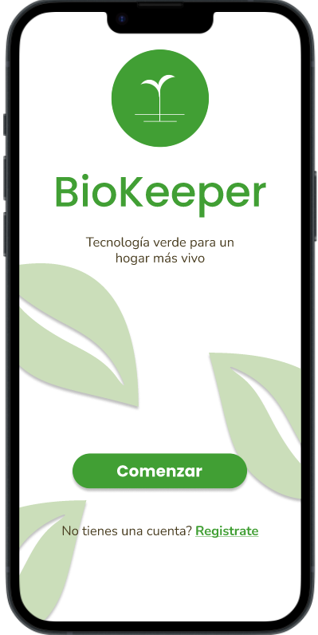

BioKeeper ahora en Móvil
Gestiona todas tus plantas del hogar
Organiza y lleva un control detallado de cada una de tus plantas. Con nuestra herramienta, podrás gestionar su cuidado de manera sencilla, manteniendo su bienestar en óptimas condiciones
Encuentra guias de la comunidad
Accede a una amplia variedad de guías especializadas y consejos prácticos para cuidar tus plantas, desde los fundamentos básicos hasta técnicas avanzadas de jardinería.
Consultas a nuestra Inteligencia Artificial
Aprovecha la inteligencia artificial para identificar, monitorear y recibir recomendaciones personalizadas que se adapten a las necesidades únicas de cada planta.
Plan de recordatorios personalizados
No olvides el cuidado de tus plantas y recibe un plan de cuidado adecuado a tus plantas sin confundirse en el proceso